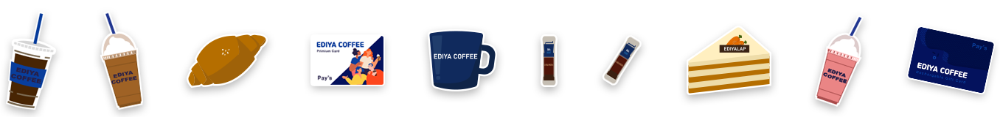

Overview
이디야커피는 국내 최다 매장을 보유한 프랜차이즈 커피 브랜드입니다. ‘합리적인 가격과 즐거움으로 전 세대가 소비할 수 있는 식문화를 만든다’는 의미에서 ‘Hormony with Enjoy’를 슬로건으로 정했습니다. 슬로건을 생각하여 다채로운 이미지를 주된 방향성으로 잡았으며, 브랜드 컨셉이 확실히 드러날 수 있도록 리뉴얼 작업을 했습니다.
Concept
다채로운 이미지를 강조하고자 채도 높은 색을 사용하였습니다. ‘Hormony with Enjoy’란 슬로건에 맞게 전 연령이 함께하는 모습의 일러스트를 메인 비주얼 디자인으로 사용했습니다. 또한 일러스트 및 도형 요소를 활용한 다양한 레이아웃과 재밌는 [Hover]효과를 통해 다양한 시각적 즐거움을 제공하도록 했습니다.
Style Guide
Typography
제목 폰트와 소제목 폰트 그리고 본문 폰트를 다른 폰트로 사용하여 자료의 가독성을 높이고 독자로 하여금 정보를 받아들이는데 거부감 없이 하였습니다.
Color
기존 브랜드 아이덴티 색상인 파랑을 메인으로 생동감 넘치는 느낌을 주기위해 노랑을 포인트 색상으로 사용했습니다.
명도 높은 메인색과 잘 어울리면서 부드러운 이미지를 줄 수 있는 색상을 보조색으로 사용했습니다.
Visual Work
Illustration
어린 아이부터 노인까지 함께 어우러지는 일러스트를 제작하여 메인 비쥬얼 이미지로 사용하였고, 이디야 소품들도 일러스트로 제작하여 사이트 곳곳에 사용하였습니다.
Banner Designn
웹사이트의 톤앤매너에 맞추기 위해 노랑과 파랑색 계열의 베너를 제작하였습니다.

Main Page
-
Main Visual
브랜드 슬로건이 잘 나타나는 일러스레이션을 배경에 배치하고 채도 높은 다양한 색상을 사용함으로 다채로운 분위기를 연출했습니다. 또한 배경과 어우러지게 베너 광고를 배치 하였습니다.
-
Content 01 Beanist
이디야커피가 주력으로 밀고 있는 스틱커피 상품인 ‘비니스트’ 제품을 직관적으로 볼 수 있게 상단에 배치하였고, 닷버튼을 누르면 슬라이드 되며 더 다양한 상품들을 볼 수 있습니다. 상품에 마우스를 올리면 확대되는 효과를 주었습니다.
-
Content 02 Ediya Factory
이디야의 최첨단 로스트기 설비 시설인 ‘이디야 팩토리’ 이미지를 도형적으로 배치하였고 이미지에 마우스를 올렸을 때 ‘이디야 팩토리’에 대한 자세한 설명이 나타나게 하였습니다.
-
Content 03 Menu
이디야커피의 메인 메뉴를 소개하는 코너입니다. 이디야커피 음료를 들고있는 일러스트 캐릭터들을 활용하고, 음료를 코스터 일러스트 위에 올려놓고 비대칭적으로 배치하여 보기 재밌게 구성하였습니다.
-
Content 04 Ediya Story
이디야커피의 새로운 소식을 모아서 볼 수 있는 코너를 만들었습니다. 시각적으로 새로운 소식을 이해하기 쉽게 가로 정렬 배치를 하였고, 마우스에 올렸을때 이미지의 태두리가 노란 포인트 색으로 변하며 그림자가 펼쳐지는 듯한 효과를 넣었습니다.
-
Content 05 Ediya Order
이디야커피 앱인 [이디야 오더]를 소개하는 코너입니다. 상하로 움직이는 애니메인션 효과를 주어 주목도를 높였습니다.
-
Content 06 franchisee
가맹점 개설 홍보 코너입니다. 버튼으로 개설점 안내 페이지와 이어지게 하였습니다. 서로 의지하며 손을 잡고 있는 일러스트를 배치하여 가맹주점과의 상생 협력을 생각하는 이디야커피의 이미지를 제시합니다.
Sub Page
-
EDIYA > 브랜드 소개
-
메뉴 · 매장 > 메뉴
-
SHOP
-
EDIYA > 앱 소개
-
메뉴 · 매장 > 매장찾기
-
창업안내 > 가맹점 개설 안내
-
새로운소식 > 공지사항

Resposible Page
메뉴 페이지는 어느 디스플레이에서도 쉽게 확인하고 주문할 수 있도록 반응형사이트로 제작하였습니다. 스클린 경계치를 1200px이상, 980px이하, 768px이하 그리고 480px이하로 제작하였습니다.